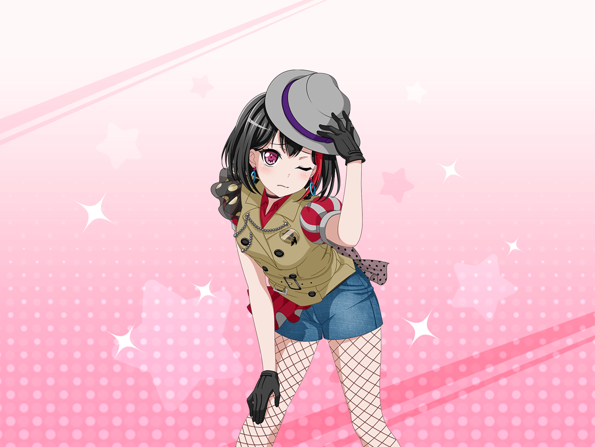

羽丘女子学園 廊下
リサ
よーし、このホウキを片付けたら終わりだね！
校内清掃お疲れさま、蘭！
蘭
……なんか、すっごい疲れた気がします
リサ
そりゃそうだよ〜……
なんたって、あの井戸が担当場所だもん。
掃除でこんな怖い思いするとは思わなかったし
蘭
でも、何も起こらなくてよかったです。
……そもそも、七不思議ですらなかったし
リサ
なんかヒナ達に、ムダに驚かされた気分だよね～
蘭
あ、その日菜さんからメッセージが来てる……
えーと……なにこれ？
リサ
え、なになに？ どうしたの？
蘭
『あの井戸、最初はシュンって感じだったけど、
最後はピコンって感じだったね』って……
リサ
えっと、どういう意味？
蘭
あたしもよくわかんないです……
蘭
……って、どんどんメッセージ来るんですけど
リサ
蘭が返事しないからじゃない？
蘭
いや、意味わかんないのに返事とか言われても……
リサ
あはは、それもそっか。
それじゃアタシも一緒にメッセージの意味考えるよ！
リサ
うーん……『るんっ♪』とか『だだだー』とか、
ヒナっぽい表現ばっかりでよくわかんないね……
蘭
……ですよね
リサ
これは楽しそうな意味のやつかな？
あ、でも、こっちに使われてる感じだと違うか〜
日菜
なになに？
２人とも何の話？
リサ
あ、ちょうどいいところに……
日菜
ん？ 何がちょうどいいの？
というか、なんで２人でスマホ見てるの？
リサ
ヒナが送ってきたメッセージを見てたんだよ
日菜
あたしが？
蘭
メッセージ、一気に送りすぎだと思うんですけど
日菜
え～？ ２人とも何言ってるの？
蘭
何って……
さっきからあたしにメッセージ送ってきてますよね？
日菜
蘭ちゃんに？
ううん、送ってないけど？
蘭
え……？
じょ、冗談ですよね。だって、こんなに……
日菜
ううん、ホントに知らないよ〜？
蘭
じゃ、じゃあこのメッセージはどこから……？
送信者はちゃんと日菜さんになってるけど……
蘭
（ま、まさか……お化け……っ！？）
リサ
ちょ、ちょっと、変な嘘つくのやめなよ〜！
日菜
だから、送ってないってば〜！
そんなに言うなら、あたしのスマホ見てみなよ。
そうすれば、はっきり……あれ？
リサ
やっぱり！ ばっちり送ってるじゃん！
日菜
あれー？ なんでだろ？
麻弥ちゃんに送ったつもりだったんだけど、
間違えて蘭ちゃんに送ってたみたい
リサ
えっ？ あ、だから送ってないって……
も〜！ 驚かさないでよ～！
日菜
あはは、ごめんごめん！
蘭ちゃんもごめんね〜？
蘭
（な、なんでお化けがあたしのところに……
あたし、何かした？ なんかの呪い……？）
日菜
えーと、聞こえてるー？？
リサ
蘭、固まっちゃってるね……